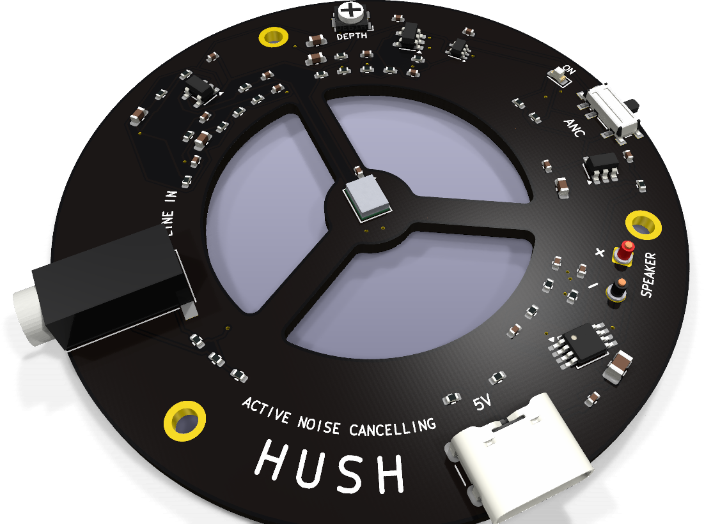
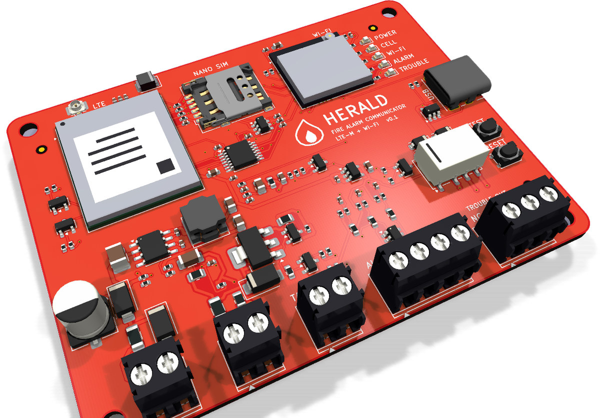
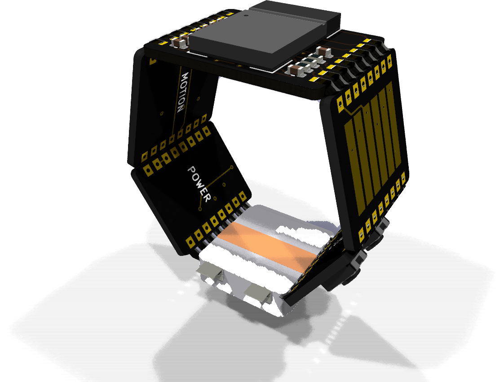
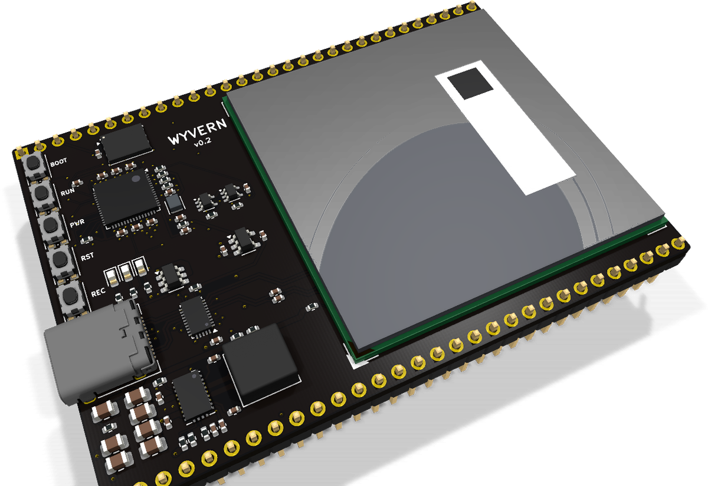
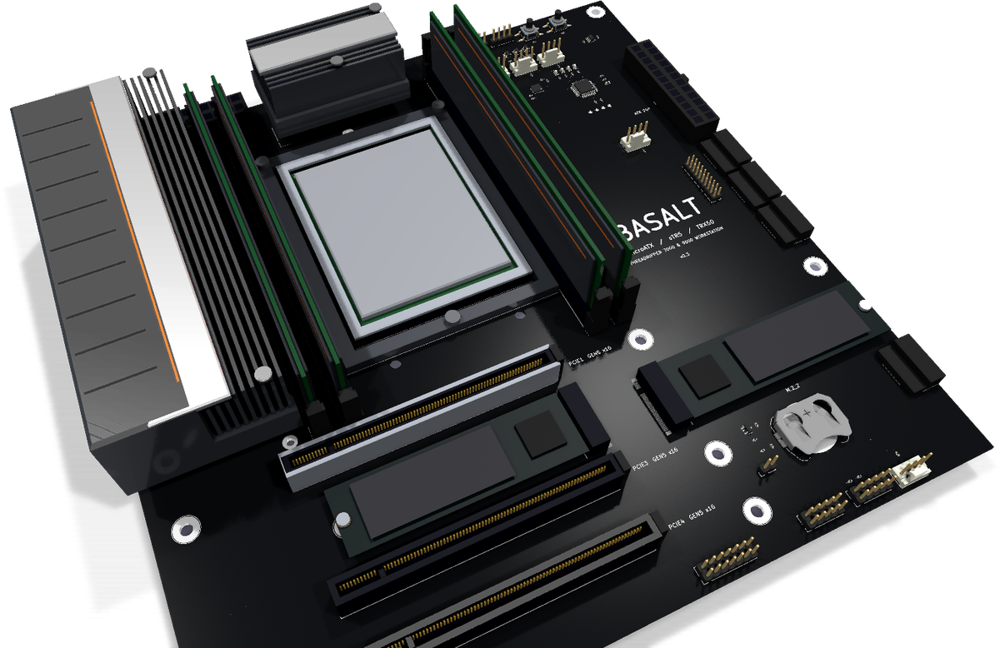
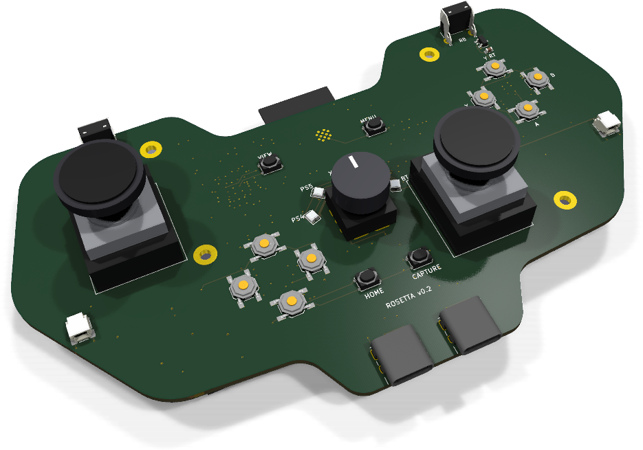

Examples
Boards designed with Via
Each example is a complete KiCad project in this repository, designed with Via from a Python design file. Open one to turn it in 3D, explore every track on the board, and read how it was built.

Hush
Hush is a speaker that listens to the room and plays the inverse wave.
v0.1 · 62 × 62 mm · 4 layers · 62 parts

Herald
A fire alarm communicator.
v0.1 · 84.4 × 64 mm · 4 layers · 127 parts

Signet
A mouse you wear as a ring.
v0.4 · GREEN on all 6 boards

Wyvern
A development board with a Snapdragon on it, on one flat board.
v0.2 · 76.2 × 53.3 mm · 6 layers · 94 parts

Basalt
Basalt is a microATX motherboard for an AMD Threadripper 7000 or 9000 on the sTR5 socket (the TRX50 platform).
v0.3 · 243.8 × 243.8 mm · 10 layers · 179 parts

Rosetta
A universal game controller, as a controller's own main board.
v0.2 · 145.5 × 82 mm · 6 layers · 135 parts